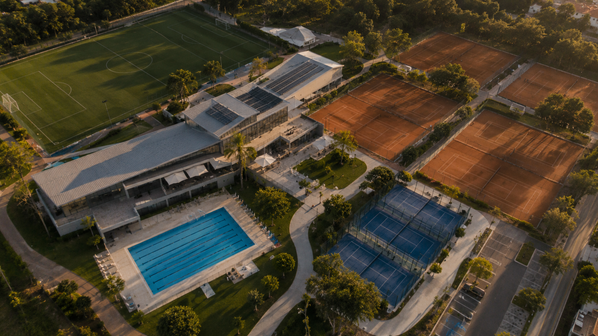

Regista o teu interesseRegister your interest
Registo para a época 2026/27 (1 Set – 31 Ago) Registration for the 2026/27 season (1 Sep – 31 Aug)
(Os campos marcados com * são obrigatórios) (Fields marked with * are required)

Sobre o Atlântico Sporting ClubAbout Atlântico Sporting Club
Bem-vindo ao Atlântico Sporting Club, um centro de excelência desportiva e comunitária onde a paixão pelo desporto encontra instalações de topo. Com programas personalizados e uma equipa dedicada, apoiamos o crescimento e o bem-estar de atletas de todas as idades e géneros — da primeira braçada ao pódio. Welcome to Atlântico Sporting Club, a premier sports and community hub where a passion for sport meets top-tier facilities. With tailored classes and a committed team, we support the growth and well-being of athletes of all ages and genders — from their very first stroke to the podium.
As Nossas InstalaçõesOur Facilities
Dez espaços pensados para treinar, competir e evoluir, distribuídos por três edifícios e uma ampla zona exterior. Ten spaces designed to train, compete and excel, spread across three buildings and a wide outdoor area.
Complexo AquáticoAquatics Building
- Piscina PrincipalMain Pool – O coração do nosso complexo aquático: uma piscina espaçosa com capacidade para 80 pessoas, no piso térreo.The heart of our aquatics complex: a spacious pool for up to 80 people, on the ground floor.
- Piscina de TreinoTraining Pool – Dedicada ao treino, com capacidade para 40 pessoas, ao lado da piscina principal.Dedicated to training, for up to 40 people, right beside the main pool.
Edifício DesportivoSports Building
- Pavilhão Desportivo PrincipalMain Sports Hall – O nosso maior espaço interior, com capacidade para 120 pessoas, no piso térreo.Our largest indoor space, for up to 120 people, on the ground floor.
- Pavilhão Desportivo SecundárioSecondary Sports Hall – Pavilhão complementar com capacidade para 80 pessoas, no primeiro andar.A complementary hall for up to 80 people, on the first floor.
- Ginásio de FitnessFitness Gym – Ginásio moderno com capacidade para 35 pessoas, no piso térreo.A modern gym for up to 35 people, on the ground floor.
Edifício PrincipalMain Building
- Sala de Atividades 1Activity Room 1 – Sala versátil para diversas atividades, com capacidade para 30 pessoas, no primeiro andar.A versatile room for a wide range of activities, for up to 30 people, on the first floor.
- Sala de Atividades 2Activity Room 2 – Espaço polivalente com capacidade para 20 pessoas, também no primeiro andar.A multi-purpose space for up to 20 people, also on the first floor.
Espaços ExterioresOutdoor Spaces
- Campo 1Court 1 – Campo exterior com capacidade para 20 pessoas, na zona norte.Outdoor court for up to 20 people, on the north side.
- Campo 2Court 2 – Campo exterior com capacidade para 20 pessoas, na zona sul.Outdoor court for up to 20 people, on the south side.
- Zona de Treino ao Ar LivreOutdoor Training Area – Espaço com capacidade para 40 pessoas, junto aos campos exteriores, ideal para treinar ao ar livre.A space for up to 40 people next to the outdoor courts, perfect for open-air training.
Mais do que um ClubeMore than a Club
No Atlântico Sporting Club, a saúde e a segurança dos atletas vêm sempre em primeiro lugar. Por isso, contamos com um Médico do Desporto dedicado a acompanhar todos os nossos membros. Oferecemos aulas adaptadas a diferentes idades e géneros, competições regulares e avaliações especializadas — oportunidades únicas para crescer, como atleta e como pessoa. At Atlântico Sporting Club, the health and safety of our athletes always come first. That is why we have a dedicated Sports Medicine Doctor looking after every member. We offer classes tailored to different ages and genders, regular competitions and specialised assessments — unique opportunities to grow, both as an athlete and as a person.
Faz parte da nossa história na época 2026/27. Be part of our story in the 2026/27 season.
ContactosContacts
Email: info@atlanticosc.ptEmail: info@atlanticosc.pt
Telefone: +351 912 345 678Phone: +351 912 345 678